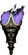

QUEREIS OFERECER-VOS
A DEUS ?


=ÍNDICE=
- PRÓLOGO
- HISTÓRICO DOS ACONTECIMENTOS - (Caminho do Convento; Comunhão Reparadora)
- A LUZ DA MENSAGEM - (Vivência da Mensagem, Transgressão da Ordem; Beatificação do Francisco e da Jacinta e o 3º Segredo; Teologia da Reparação do Coração Imaculado de Maria; o Lugar de Maria no desígnio de DEUS e no Mistério de CRISTO; Profanação e Blasfêmia do Santo Nome de DEUS; a Reparação como meio de Salvação; a necessária identidade do Sacrifício, da Adoração e da Reparação; a Adoração Reparadora é também eficaz para Salvar os outros; o que DEUS espera de nós)
- ÚLTIMAS NOTÍCIAS + NOVENA + CONVITE + E-MAIL + FIRMAS DE BUSCAS